file_data
| file_name | reservoir_computer_code_review.pdf |
| author | ghostnation |
| date | 22MAY2025 |
1.0
Code structure
The reservoir compute (RC) architecture is designed to ingest and learn the dynamics of a
Chua chaotic system, also known as a double-scroll attractor. It is often described by a system of 3 nonlinear ODEs (to represent positional information along 3 axes). The dynamics along each of the "positional" elements of the chaotic system are described below, and a figure presenting the hyperparameters is provided.
1.0
Double-Scroll Attractor Dynamics
$$ \begin{align*} \frac{dx(t)}{dt} &= a(y(t) - x(t)) \\ \frac{dy(t)}{dt} &= (c - a)x(t) - x(t)z(t) + cy(t) \\ \frac{dz(t)}{dt} &= x(t)y(t) - bz(t) \end{align*} $$
$$ \begin{align*} \frac{dx(t)}{dt} &= a(y(t) - x(t)) \\ \frac{dy(t)}{dt} &= (c - a)x(t) - x(t)z(t) + cy(t) \\ \frac{dz(t)}{dt} &= x(t)y(t) - bz(t) \end{align*} $$
RC Hyperparameters
The user-defined parameters that are implemented in the network to set up the Reservoir Compute Network
The purpose of the hyperparameters are as follows:
•
•
•
•
•
•
•
•
•
•
•
•
•
options = odeset('RelTol',1e-10,'AbsTol',1e-8);: Sets the relative and absolute tolerances for the ode45 solver, which is used to solve ordinary differential equations.•
transient_span = 500;: The duration of the initial "transient" phase of the chaotic system. Data from this phase is typically discarded because the system hasn't settled into its chaotic attractor yet.•
train_span = 500;: The duration of the time series used for training the reservoir computer.•
control_span = 1000;: The duration of the time series used for testing the trained reservoir computer.•
ts = 0.01;: The time step for the simulation. A smaller ts means more data points and a more detailed simulation, but also longer computation time.
• total_span = transient_span + train_span + control_span;: The total duration of the simulation.•
full_span = [0:ts:total_span];: Creates a time vector from 0 to total_span with steps of ts.•
transient_idx, train_idx, control_idx: These variables calculate the indices corresponding to the end of the transient, training, and control (testing) spans, respectively. These indices are used to divide the generated time series into different segments.•
y0 = rand(3,1)*10^-2;: Sets the initial conditions for the Chen system. It's a small random vector to ensure the system starts from a slightly different point each time, which is characteristic of chaotic systems.•
[T,XD] = ode45('Chen',full_span,y0);: This is the core line for generating the chaotic time series.•
drive_sig = XD(:,1);: Extracts the first component (x-component) of the Chen system's output. This is often used as the "driving" signal for the reservoir, meaning it's fed into the reservoir computing system.•
train_sig = XD(transient_idx+1:train_idx,2);: Extracts the second component (y-component) for the training phase, after discarding the transient. This is the signal the reservoir will learn to predict.•
test_sig = XD(train_idx+1:end,2);: Extracts the y-component for the testing phase. This is the signal used to evaluate the trained reservoir's performance.
none
1.2
Mathematical Foundations of RC Networks
The objective of a reservoir compute network is somewhat twofold, the first is to define an appropriate structure for the hidden states, and the second is to train on observed values to adjust the parametrization of the function (at the output layer, because the internal weight matrix is static) in a way that minimizes the objective function (Crossentropy for classification tasks, or Mean Squared Error for quantitative tasks). Below we show the mathematical renders for the hidden state evaluation and the evaluation of the output prediction.
1.1
Hidden State Equation
$$ x_i(n+1) = \tanh\left[ \sum_{j=0}^{N-1} a_{ij} x_j(n) + b_i u(n) \right] $$ 1.2 Prediction Equation
$$ \hat{y}(n) = \sum_{i=0}^{N-1} W_i x_i(n). $$
$$ x_i(n+1) = \tanh\left[ \sum_{j=0}^{N-1} a_{ij} x_j(n) + b_i u(n) \right] $$ 1.2 Prediction Equation
$$ \hat{y}(n) = \sum_{i=0}^{N-1} W_i x_i(n). $$
1.3
Training the Network
The RC network is trained in via looping construct in order to minimize the output to an arbitary error value. This particular network does not implement a gradient descent mechanism (these mechanisms are used in Deep RNNs or Trainable RCs), because RC networks are typically instanced with random parametrizations and a regression is performed a single time during the fitting phase. When the fit yields an error value that exceeds the threshold, a new RC is generated with random internal variables and retested. The random "adjacency" matrix A is initially set up to generate a number of neurons (scalar value) and is linked via the Erdos-Renyi function, which will generate linkages among an arbitrary set of nodes. The design of the network also requires that self-connections are removed from the weight matrix to ensure inter-neuron interactions have an opportunity to be featured in the network system, as opposed to intra-neuron, self connections that can potentially dominate the network (which would violate the Echo State Property as self-sustained activations would not decay). Perhaps most importantly, the reservoir is scaled so that the spectral radius is bounded by 1 (which requires extraction of eigenvalues and normalization of the weights generated via ER on the maximum eigenvalue). The trianing step is provided in the following figure.
RC Training Scheme
The user-defined parameters that are implemented in the network to set up the Reservoir Compute Network
2.0
Experimental Analysis of RC Network
In the following section, we design several test cases to evaluate the effect of altering the number of nodes, connection density, and spectral radius of the network. The sections will examine the test cases with the aforementione dobjectives separately.
2.1
Node Parameter Manipulation
The following figures and error metrics show the effects on system performance as nodes are instanced with values of n=1, n= 100, n = 250, n = 500 in order. We modify the looping construct to instead perform number of iterations to completion as opposed to completing at a desired accuracy, as particular text conditions may not permit such high accuracies and cause infinite recursion. The modified code is shown below:
none
Quad-array of Test Results
|
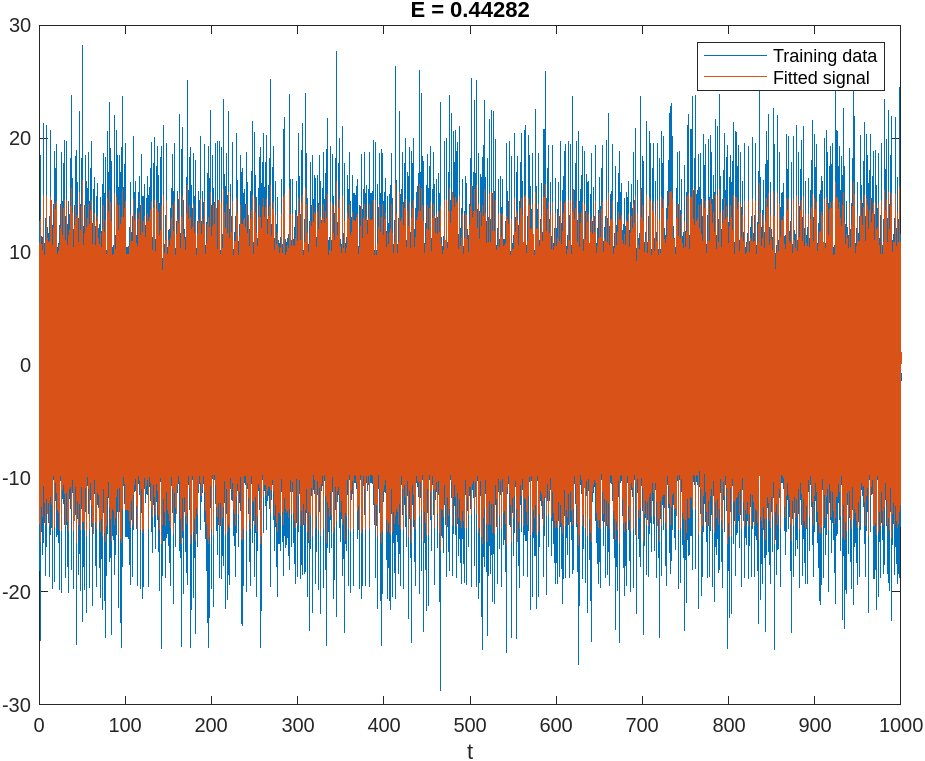 |
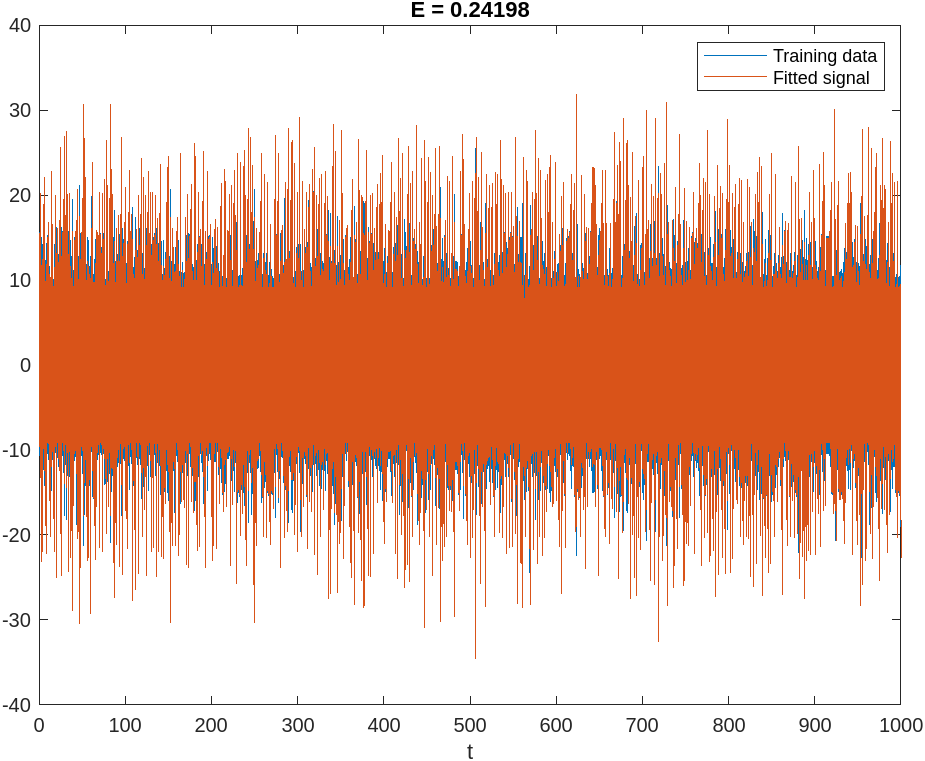 |
|
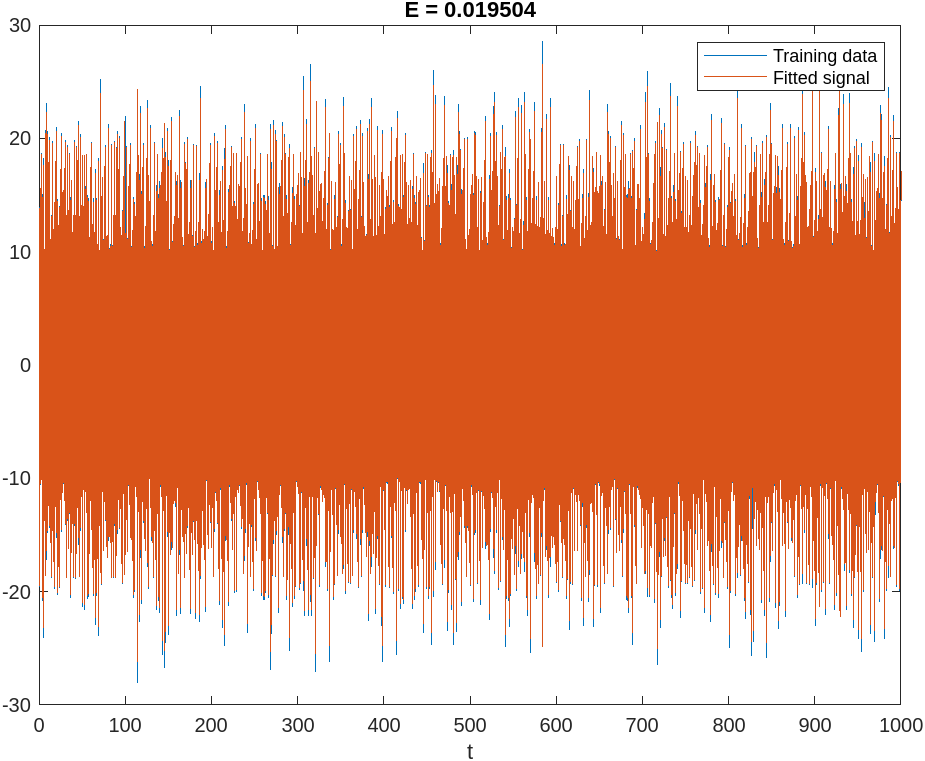 |
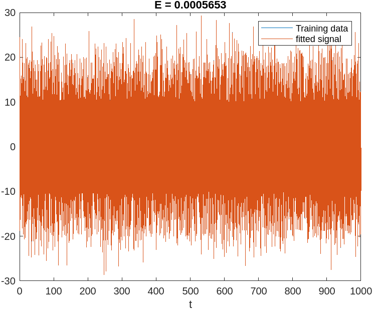 |
a) nodes = 1, b) nodes = 5, c) nodes = 50, d) nodes = 500
2.2
Spectral Radius Manipulation
The RC network is hardcoded to normalize the spectral radius of the arbitrarily generated weight matrix. In the following capture, we display the effect of RC performance by restricting the spectral radius to 0.1, 0.2, 0.5, and 0.9 respectively (with the expectation that lower values of sepctral radii bring the system to a more "overdamped" state). We identified n=500 to be our optimal parameter for generated high quality predictions in the previous example, and fix this parameter accordingly.
Quad-array of Test Results
|
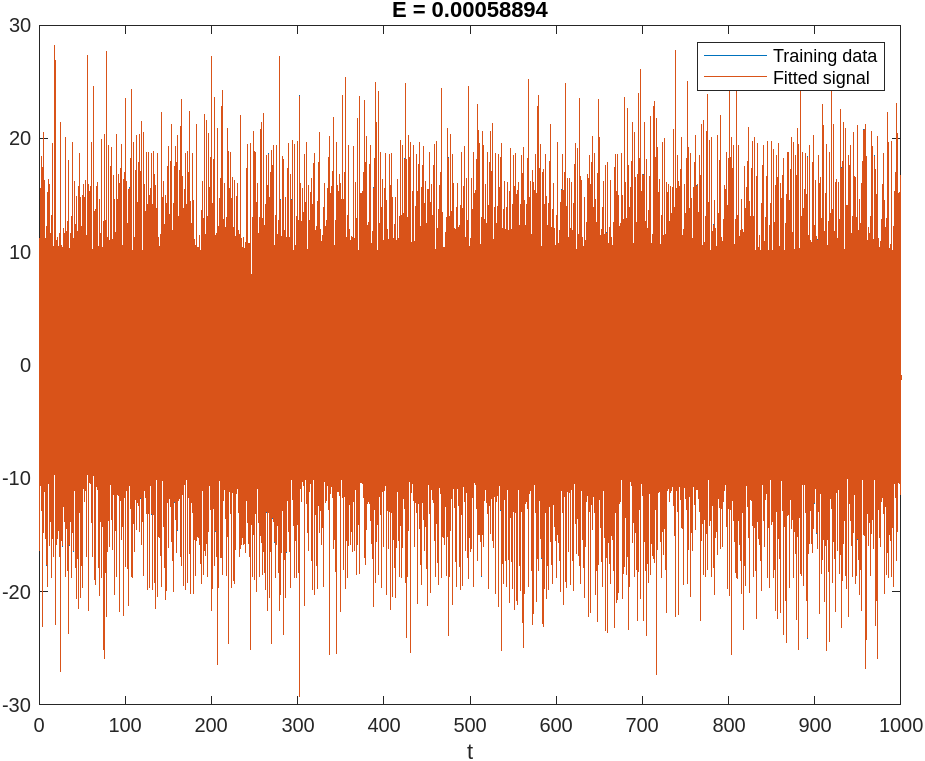 |
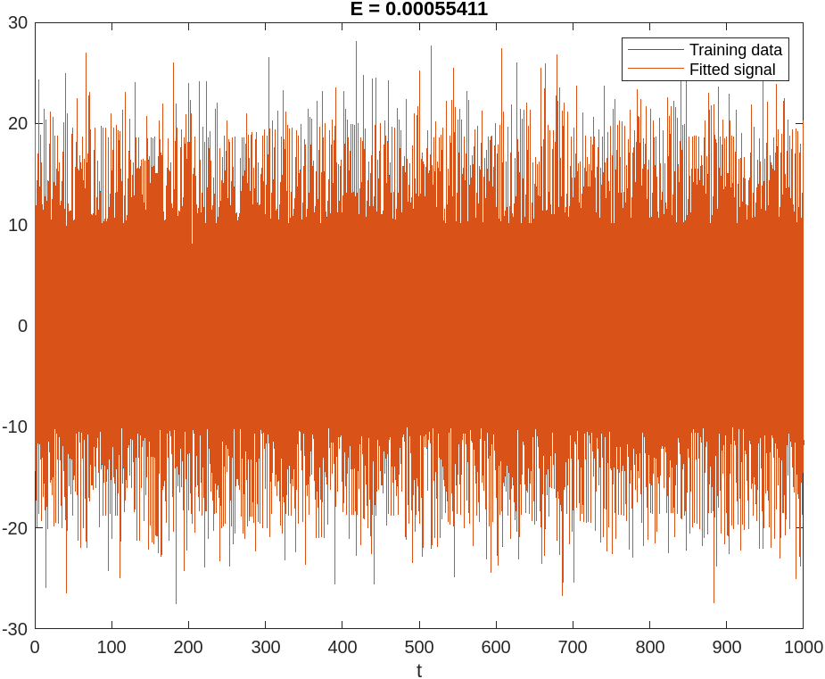 |
|
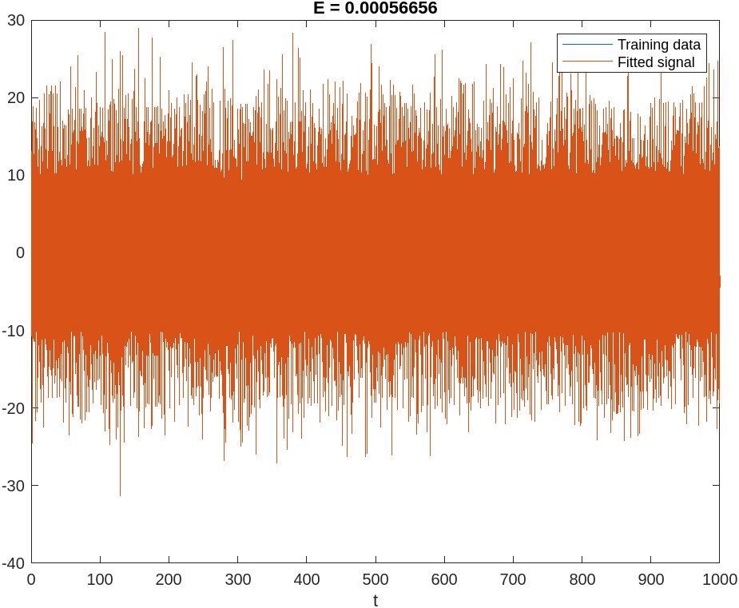 |
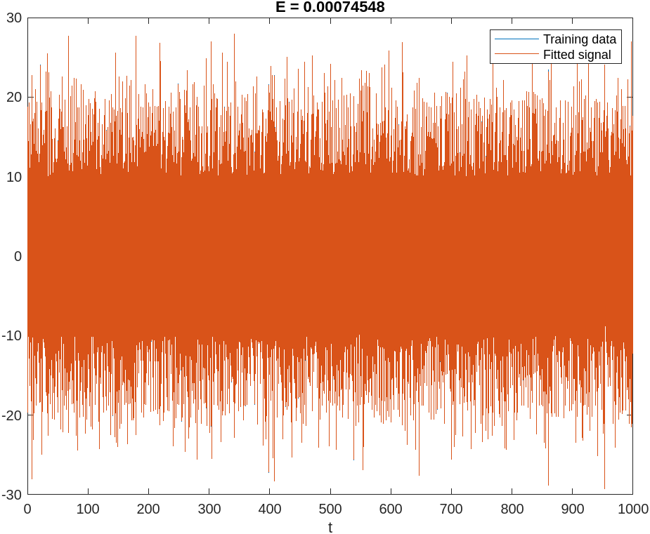 |
a) SR = 0.1, b) SR = 0.2, c) SR = 0.5, d) SR = 0.9
LSTM 2 Testing Array (parameters in description), E2
|
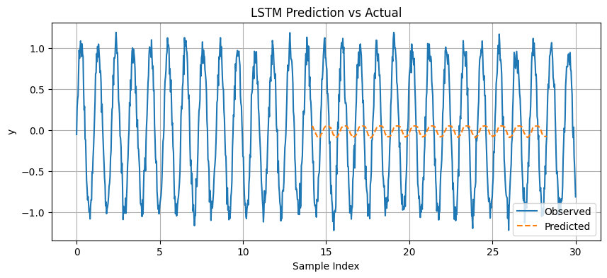 |
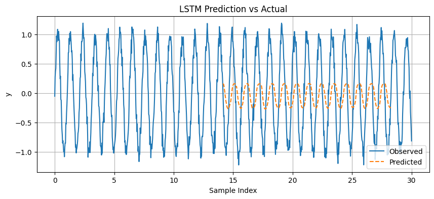 |
|
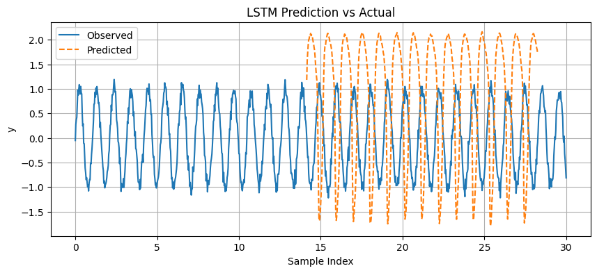 |
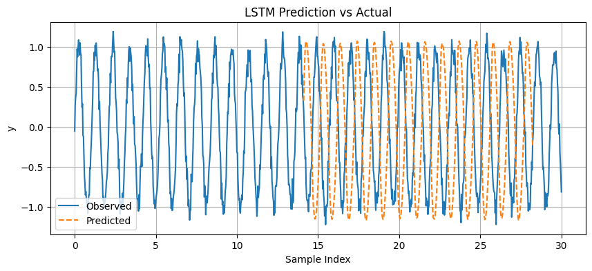 |
a) window_size: 1, hidden_nodes: 10; b) window_size: 4, hidden_nodes: 20; c) window_size: 8, hidden_nodes: 80; d) window_size: 12 , hidden_nodes: 100.
LSTM 2 Testing Array (parameters in description), E2
|
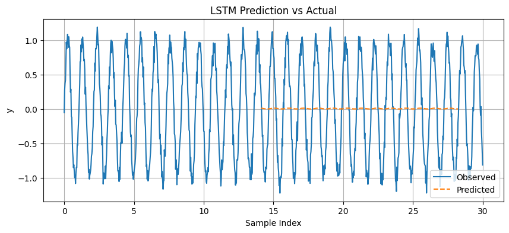 |
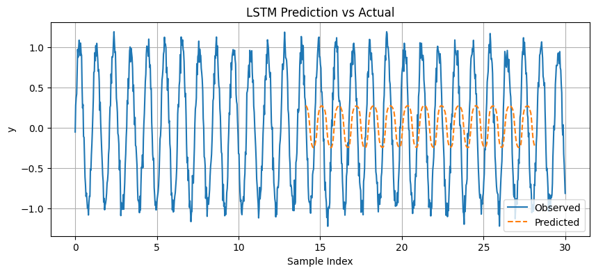 |
|
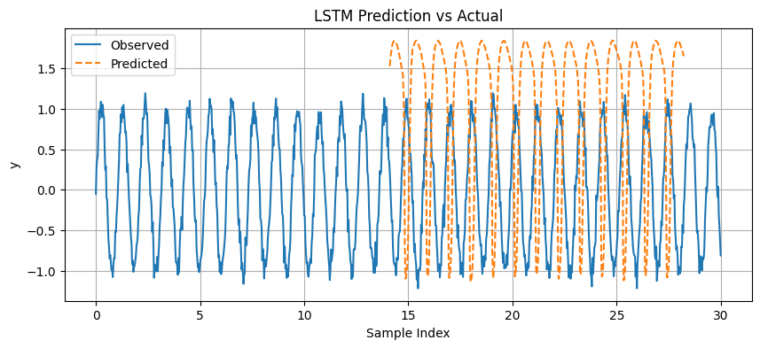 |
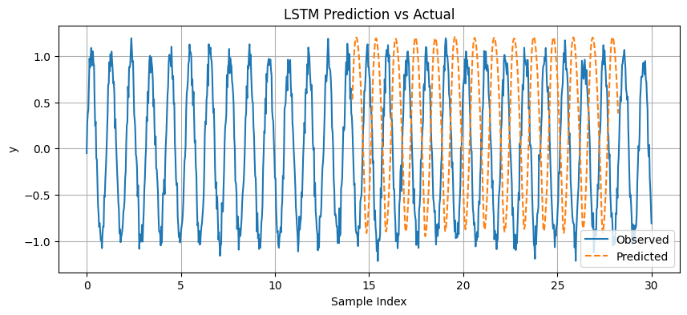 |
a) window_size: 1, hidden_nodes: 10; b) window_size: 4, hidden_nodes: 20; c) window_size: 8, hidden_nodes: 40; d) window_size: 8 , hidden_nodes: 80
MSE Loss for Optimized LSTM (2-layer), E2
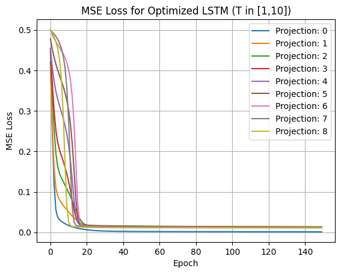
The characterization of the dyanmics in Experiment 2 afforded much better characterization, as indicated by the prediction renders in the quad-figures. This is primarily due to the fact the latter system is not influenced by a secondary dynamic (note that the first system exhibited a sinusoidal and direct proportional response to the elapse of time). With a simpler system, the LSTM is able to characterize the activity more effecitvely and quickly (we note that fewer epochs of training are required to observe training convergence). Due to the nature of this network utilizing the numpy library exclusively, we might expect implementing an optimizer or loading the data on a GPU network to train more aggressively over a longer duration will increase the accuracy to some degree.
The characterization of the dyanmics in Experiment 2 afforded much better characterization, as indicated by the prediction renders in the quad-figures. This is primarily due to the fact the latter system is not influenced by a secondary dynamic (note that the first system exhibited a sinusoidal and direct proportional response to the elapse of time). With a simpler system, the LSTM is able to characterize the activity more effecitvely and quickly (we note that fewer epochs of training are required to observe training convergence). Due to the nature of this network utilizing the numpy library exclusively, we might expect implementing an optimizer or loading the data on a GPU network to train more aggressively over a longer duration will increase the accuracy to some degree pearlmutter1990dynamic. Admittedly, the oscillatory nature of the dynamics pose a complication when computing gradients as there are frequent directional changes of the gradients during backpropagation, which is one supporting notion for the "lagging" nature of both LSTMs in both experiments morchdi2023exploring. Undoubtedly, the most significant factor that influences the networks accuracy is the number of hidden cells, as too few cells will prevent the network from characterizing the dynamics of a signal, provided that the window length encompass at LEAST one period of the signal. In both experiments, having an additional hidden layer, and an additional output layer, affords the network with greater evaluation capacity. We designate the 2-layer network as having superior approximation capabilities, with a MSE of > 0.001, whereas the 1-layer network was not found to converge to a lower value than 0.01 within the extent of our testing effort.
References
Appendix
Numpy-only LSTM
Numpy-only LSTM
Numpy-only LSTM